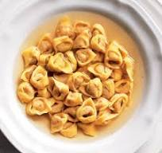

Recipe Tortellini
Home

Description
Tortellini are a classic stuffed pasta from the Emilia-Romagna region of Italy, especially associated with Bologna and Modena. Traditionally, they are filled with a flavorful mixture of meat, cheese, and spices, and served in a rich homemade broth. Tortellini in brodo is considered a festive dish in Italian cuisine, often prepared for Christmas and special occasions, though it’s delicious all year round.
Preparing tortellini from scratch is a labor of love that combines art and tradition. The dough is rolled out into thin sheets, then cut into small squares or circles. A tiny portion of the meat filling is placed in the center of each, then the pasta is folded and shaped into its signature ring form. Once ready, the tortellini are gently cooked in a savory meat broth, resulting in a comforting and elegant dish that showcases the craftsmanship of Italian culinary heritage.
Ingredients
For the pasta dough:
- 200 g (1 ⅓ cups) all-purpose flour or “00” flour
- 2 large eggs
For the filling:
- 100 g (3.5 oz) ground pork
- 100 g (3.5 oz) prosciutto crudo
- 100 g (3.5 oz) mortadella
- 100 g (3.5 oz) grated Parmigiano Reggiano
- 1 egg
- A pinch of nutmeg
- Salt and pepper to taste
For the broth:
- 1 whole chicken or hen (about 1.5 kg)
- 1 beef bone or small piece of beef (optional)
- 1 onion
- 1 carrot
- 1 celery stalk
- Salt to taste
Steps
- Make the broth: In a large pot, place the chicken, beef bone (if using), onion, carrot, and celery. Cover with cold water, bring to a boil, then reduce heat and simmer for at least 2 hours. Skim off any foam that rises to the surface. Once ready, strain the broth and keep warm.
- Prepare the filling: Finely chop or blend the prosciutto, mortadella, and pork. Mix with Parmigiano, one egg, a pinch of nutmeg, salt, and pepper. Mix until smooth. Cover and refrigerate while preparing the dough.
- Make the pasta dough: On a clean surface, make a well with the flour and crack the eggs in the center. Gradually mix and knead for about 10 minutes until smooth. Let rest covered for 30 minutes.
- Roll and shape the tortellini: Roll out the dough very thin (using a pasta machine if possible). Cut into 3–4 cm squares. Place a small amount of filling in the center of each square. Fold into a triangle, then shape into a ring by wrapping the corners around your finger and pressing to seal.
- Add the toppings: Spread the tomato sauce evenly over the dough. Add the mozzarella, a few basil leaves, and a drizzle of olive oil.
- Cook and serve: Bring the strained broth to a gentle boil. Add the tortellini and cook for 3–5 minutes until they float and are tender. Serve hot in the broth with extra Parmigiano Reggiano if desired.